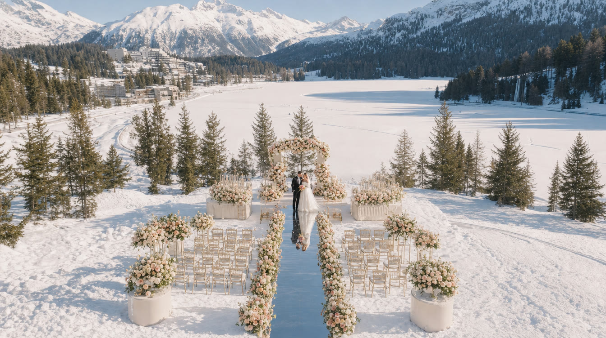
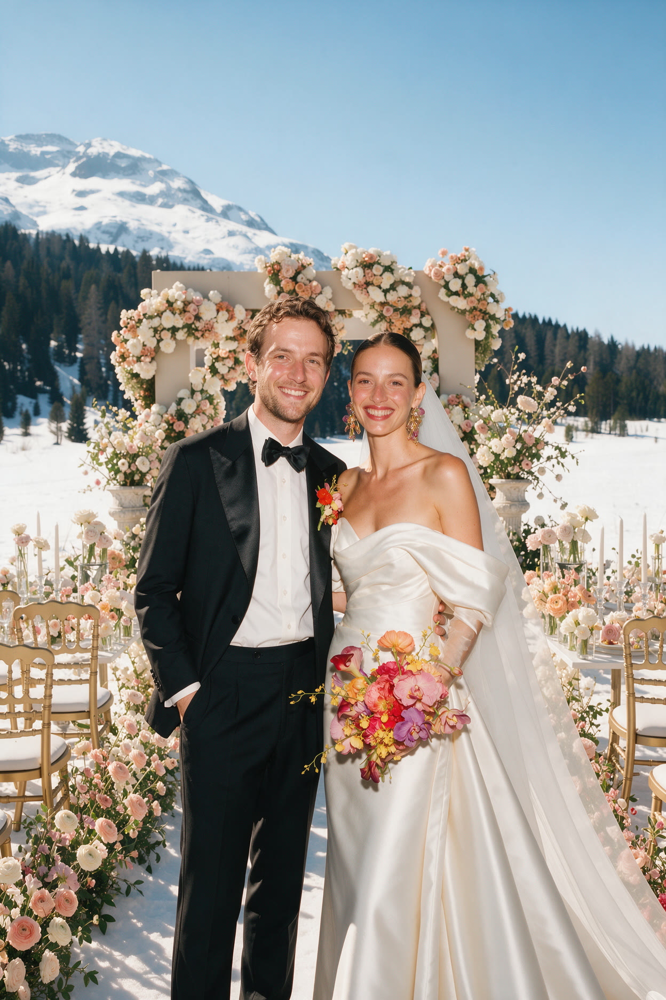

— Journal · Destination Guide
Picture this: a frozen lake glittering under a blue sky, snow-capped peaks all around, your guests wrapped in cashmere and furs, and a horse-drawn sleigh waiting to take you to dinner. That is a St Moritz winter wedding, and honestly, very few places in the world can compete with it.
St Moritz has been the playground of the international jet set for more than 150 years, and it has hosted some of the most talked-about weddings of the last two decades. If you are dreaming of getting married in the Swiss Alps, this is the guide we wish every couple had: where to get married, the planners who know the valley, what your guests will do between the celebrations, how to get there, the paperwork, and how to make sure it all looks as good on film as it feels on the day.

Why get married in St Moritz in winter?
Let's start with the sunshine. St Moritz sits at around 1,800 metres in the Upper Engadine valley and enjoys more than 300 days of sun a year. The locals call it the champagne climate: crisp, dry air, bright days and snow that actually stays white. For a winter wedding, that means blue skies are the rule rather than the exception.
Then there is the history. Winter tourism was born here. In the autumn of 1864, hotelier Johannes Badrutt made a famous bet with four English guests at the Kulm: come back in December, and if you don't enjoy it, I'll pay for your trip. They came back, stayed until Easter, and the winter holiday was invented. St Moritz went on to host the Winter Olympic Games in 1928 and 1948. Getting married here means joining a story of glamour that very few destinations can claim.
And for us as filmmakers, there is the light. Snow acts like a giant reflector, softening every face, and the low winter sun paints the peaks pink and gold in the late afternoon. It is one of the most cinematic settings we know.
Where to get married in St Moritz: the venues
Badrutt's Palace Hotel is the legend. Opened in 1896 and still owned by the Badrutt family, it overlooks the lake with more than 150 rooms and suites, seven restaurants, including IGNIV by Andreas Caminada, which holds a Michelin star, and the Chesa Veglia, a rustic farmhouse the hotel turned into a meeting place for gourmets and VIPs back in 1936. It is perfect for a grand ballroom reception.
The Kulm Hotel is where winter tourism began, and it remains one of the great addresses of the Alps: a five-star superior hotel with rooms for events of up to 500 guests. In January 2020 it hosted the wedding of Stavros Niarchos and Dasha Zhukova, one of the most photographed winter weddings of the decade.

Suvretta House, built in 1912 and still owned by its founding family, sits in its own parkland a little above the town, with sweeping views, its own ice rink and an atmosphere of old-world calm that suits a more private celebration. The Carlton Hotel and the Kempinski Grand Hotel des Bains complete the list of five-star palaces, each with its own character.
For the ceremony itself, think beyond the hotel. On Lej da Staz, a small lake in the forest that freezes in winter, couples arrive by horse-drawn carriage for a ceremony surrounded by snow and pine trees. Muottas Muragl, reached by a red funicular in ten minutes, sits at 2,456 metres above the lakes of the Upper Engadine and offers what is probably the most beautiful view in the valley, with sunsets that stop conversations. El Paradiso, a mountain restaurant above the Corviglia slopes, can host a celebration for a couple of hundred guests close to the sky. And if you want a church wedding, St Moritz has the parish church of St Mauritius, the church of St Charles Borromeo and the little Regina Pacis chapel, among others.
The wedding planners who know St Moritz
A St Moritz wedding lives or dies by its logistics: snow, altitude, transfers and very short winter days. You want a planner who knows the valley. Eventfieber specialises in mountain and winter weddings and has staged ceremonies on the frozen Lej da Staz with dinner at Muottas Muragl. PinkFairy was founded by Flurina Caviezel, a native of the Engadine with a background in the international hotel industry, and designs stylish, detail-driven celebrations. Melanie Thun plans exclusive weddings for international couples in places like Badrutt's Palace.
Many of the couples we film work with their own international planner, who then partners with local suppliers in the Engadine. Both approaches work beautifully. What matters is that someone on the team has already done a winter wedding at altitude, and knows exactly how long it takes to move 150 guests from a funicular to a ballroom in the snow.
The kind of celebrations St Moritz hosts
St Moritz does big, and it does discreet. The Niarchos-Zhukova wedding at the Kulm brought together guests including Princess Beatrice, Orlando Bloom, Kate Hudson and Karlie Kloss, with the bride in a high-collared Valentino gown. Boris and Lilly Becker celebrated their wedding here over three days in 2009, crowned by a brunch in the Alps. In 2019, the Ambani family brought pre-wedding celebrations for Akash Ambani and Shloka Mehta to the resort, with guests staying at Badrutt's Palace.
Just as many weddings here never make the papers at all. Swiss discretion is real, and many of the most spectacular celebrations in the valley happen with no press, no photos on social media, and staff who simply do not talk. If privacy matters to you, St Moritz understands.
Beyond the ceremony: skiing, the frozen lake and your guests' weekend
A destination wedding is a weekend, not a day, and St Moritz gives your guests plenty to do. The region has around 350 kilometres of slopes. Corviglia, reached by funicular straight from the village, has runs for every level. Corvatsch offers the highest skiing in the area, and Diavolezza has a famous ten-kilometre descent across the glacier down to Morteratsch. A ski morning followed by lunch on a sunny terrace is the perfect welcome-day activity.
Time your date right and the frozen lake itself becomes the show. White Turf has turned Lake St Moritz into Europe's highest horse-racing track every February since 1907, and the Snow Polo World Cup has played on the ice since 1985. For the brave, the Cresta Run, a 1,212-metre natural ice track down to Celerina, has been sending riders head-first since the late nineteenth century. And for everyone else, a horse-drawn sleigh ride through the Val Roseg or a sunset drink at Muottas Muragl will do very nicely.
And yes, the raclette
We have to talk about cheese. Raclette is the dish everyone associates with a winter wedding in the Alps, and a raclette night makes a wonderful, relaxed welcome dinner after the formality of the big day. A little history to settle the debate at your table: raclette was born in the Swiss canton of Valais, where melting cheese by the fire is recorded as far back as 1574, but our French neighbours in Savoie have made it so much their own that Raclette de Savoie now has its own protected status. Swiss or French, it is delicious, and nobody complains when the cheese arrives.
The Engadine has its own specialities too: the Engadiner Nusstorte, a caramel-and-walnut tart that makes a perfect wedding favour, capuns, chard parcels stuffed with dough and air-dried meat, and pizokel, little buckwheat dumplings. Add a candlelit dinner in a wooden stübli and you have the cosiest rehearsal dinner imaginable.
Getting to St Moritz
Most guests fly into Zurich and take the train, which takes about three and a half hours and is a spectacular journey in itself. The Bernina Express runs from St Moritz to Tirano in Italy, and the Glacier Express links St Moritz with Zermatt in about seven and a half hours, both on the Rhaetian Railway, part of which is a UNESCO World Heritage site. For guests flying privately, Engadin Airport in Samedan, just a few minutes away, sits at 1,707 metres and is one of the highest airports in Europe, with a runway long enough for long-range business jets.
The paperwork: getting legally married in Switzerland
You don't need to be Swiss to marry in Switzerland, but a civil ceremony at the registry office is the only legally binding form of marriage. You will need passports, birth certificates, proof that you are free to marry and, depending on your nationality, official translations. Once the civil registry accepts your application, you have three months to marry. The ceremony is held in one of the local languages, so a translator is often needed. Many international couples marry legally at home and then hold a symbolic ceremony in St Moritz, which leaves complete freedom over the location, the officiant and the timing.
Filming a winter wedding in St Moritz
Here is where we come in. Snow is beautiful and unforgiving: it can fool a camera's exposure, drain batteries in the cold and turn a white dress grey if the light is not handled properly. Winter days are short, so we plan portraits around the late-afternoon light rather than squeezing them in after dinner. Drones need planning too, as the airspace around Samedan airport is controlled. And our crew dresses for the mountain so that we can follow you from the funicular to the frozen lake without missing a moment.
The result is worth it. Few settings in the world give a wedding film that combination of scale and intimacy: the vast white valley, then a candlelit room full of the people you love. That is exactly the contrast we love to capture.
When to plan your St Moritz wedding
The grand hotels open for the winter season from December to around Easter. January and February give you the deepest snow and the frozen-lake events, while March brings longer days and more sun for outdoor ceremonies. The best venues and dates are booked a year or more in advance, especially around Christmas, New Year and White Turf, so start early.
A note on the images in this guide: they are AI-generated illustrations created by our studio to show the mood of a St Moritz winter wedding. They are not photographs of a real celebration.
Dreaming of saying yes in the snow? Tell us your date and your venue, and let's make a film that feels like St Moritz.
Planning your own celebration? Explore our wedding films in Europe, Lake Como and the French Riviera.
Frequently asked questions
Where can you get married in St Moritz?
The most popular wedding venues in St Moritz are Badrutt's Palace Hotel, the Kulm Hotel, Suvretta House, the Carlton Hotel and the Kempinski Grand Hotel des Bains. For ceremonies, couples also choose the frozen Lej da Staz lake, reached by horse-drawn carriage, Muottas Muragl at 2,456 metres, the El Paradiso mountain restaurant, or one of the village churches such as St Mauritius or the Regina Pacis chapel.
Is St Moritz a good place for a winter wedding?
Yes. St Moritz enjoys more than 300 days of sunshine a year, reliable snow from December to March, world-class hotels and plenty for guests to do, from skiing 350 kilometres of slopes to White Turf horse racing on the frozen lake. It is where winter tourism was invented in 1864.
Which wedding planners work in St Moritz?
Planners with experience in St Moritz include Eventfieber, which specialises in mountain and winter weddings, PinkFairy, founded by Engadine native Flurina Caviezel, and Melanie Thun, who plans weddings at venues such as Badrutt's Palace. Many international planners also work in St Moritz with local partners.
Can foreigners legally get married in St Moritz?
Yes. You do not need to be Swiss, but the only legally binding marriage in Switzerland is a civil ceremony at the registry office, which requires documents such as passports and birth certificates. Many international couples marry legally at home and hold a symbolic ceremony in St Moritz.
How do wedding guests get to St Moritz?
Most guests fly into Zurich and take the train, about three and a half hours. Engadin Airport in Samedan, a few minutes from St Moritz, welcomes private jets. The Bernina Express and Glacier Express also connect St Moritz with Italy and Zermatt.
Does Chromata Films film weddings in St Moritz?
Yes. Chromata Films is a luxury destination wedding film studio based between Geneva and the French Riviera, and we film weddings across the Swiss Alps, including St Moritz. Collections start at 15,000 USD, with travel and accommodation included.
— Begin Your Journey